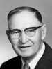

Hans and Mathilda Torgersen Sorensen Family Group
Home
Histories
Charts
Photos
Maps
Restricted
News
Info
Contact
 symbol is a link to a history,
symbol is a link to a history,  a source, and the chart
a source, and the chart  symbol is a link to a family group chart.)
symbol is a link to a family group chart.)|
Soren Nielsen and Karen Jorgensdatter |
--> |   |
Hans Sorensen Born 2 Oct 1825 Kragerup, Ørslev, Holbaek, Denmark Died 6 Apr 1893 Aurora, Sevier, UT Hans life timeline Mathilda Torgersen (Evensen) Born 14 Aug 1853 Of, Hurum, Buskerud, Norway Died 26 Dec 1912 Aurora, Sevier, UT Married 27 May 1880 Endowment House, Salt Lake City, UT Hans also married Ane Nielsen 9 Sep. 1848, Tersløse, Holbaek, Denmark | |
|
Even Torgersen and Oline Reiersen |
 |
Nora Sorensen Born 29 Aug 1881 Koosharem, Sevier, UT Died 5 Nov 1982 Married Joseph Alvin Sorensen 16 Mar 1907 Richfield, Sevier, UT
The 1st child of Hans Sorensen and Mathilda Torgersen (Evensen) |
  |
Josephine Sorensen Born 7 Feb 1883 Koosharem, Sevier, UT Died 15 Aug 1955 Rock Springs, Sweetwater, Wyoming Married Niels Hyrum Christensen 8 Feb 1906 Manti, Sanpete, UT
The 2nd child of Hans Sorensen and Mathilda Torgersen (Evensen) |
|  | Maria Sorensen Born 24 Sep 1884 Aurora, Sevier, UT Died 7 Oct 1965 Salt Lake City, UT Married Phillip Mason 8 Feb 1906 Manti, Sanpete, UT
The 3rd child of Hans Sorensen and Mathilda Torgersen (Evensen) |
| Edwin Sorensen Born 20 Jun 1886 Aurora, Sevier, UT Died 19 Aug 1961 Sevier, UT Married Clarissa Josephine Jensen 14 Dec 1910 Manti, Sanpete, UT No children The 4th child of Hans Sorensen and Mathilda Torgersen (Evensen) |
|
  |
Levi Sorensen Born 16 Sep 1888 Aurora, Sevier, UT Died 23 Jun 1977 Aurora, Sevier, UT Married Elnora Ethel Nielson 17 Feb 1915 Sevier, UT
The 5th child of Hans Sorensen and Mathilda Torgersen (Evensen) |
 |
Alma Sorensen Born 31 Mar 1891 Bunkerville, Lincoln, Nevada Died 12 May 1977 Richfield, Sevier, UT Married Mattie Amelia Helquist 13 Dec 1916 Manti, Sanpete, UT
The 6th child of Hans Sorensen and Mathilda Torgersen (Evensen) |